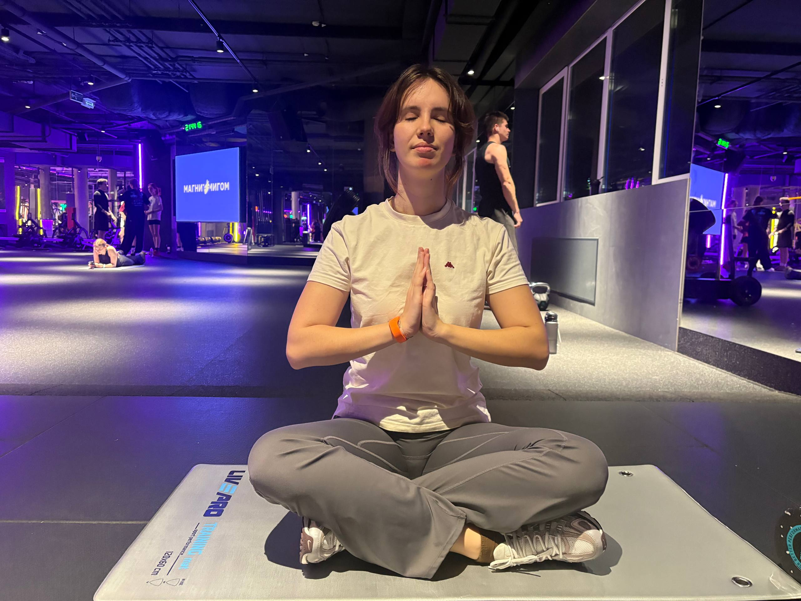

Низ тела
Ягодичный мост в тренажёре Смита 58,8 кг · 3 × 10
Лестничный тренажёр 100 ккал
Сгибание ног сидя 27 кг · 3 × 12
Разведение ног в тренажёре 59 кг · 3 × 12
Мёртвый жук
Заминка
Здесь собраны мои тренировки за октябрь: упражнения, рабочие веса и количество подходов. Запись «3 × 10» означает три подхода по десять повторений.
10 занятий
Ягодичный мост в тренажёре Смита 58,8 кг · 3 × 10
Лестничный тренажёр 100 ккал
Сгибание ног сидя 27 кг · 3 × 12
Разведение ног в тренажёре 59 кг · 3 × 12
Мёртвый жук
Заминка
Суставная разминка
Подтягивания в гравитроне 27 кг · 5 × 3
Жим от груди в тренажёре 18–20 кг · 3 × 10
Обратная бабочка 15 кг · 3 × 10
Сгибание рук на бицепс 6 кг · 3 × 10
Подъём гантелей по диагонали 3 кг · 3 × 12
Заминка и упражнения на пресс
Ягодичный мост 72 кг · 3 × 8
Сгибание ног в тренажёре 32 кг · 3 × 10
Разгибание ног в тренажёре 34 кг · 3 × 10
Сведение ног в тренажёре 32 кг · 3 × 12
Эллиптический тренажёр 6 минут
Подтягивания с резинками красная и синяя резинки
Тяга снизу к груди 25 кг · 3 × 10
Тяга одной рукой в тренажёре 42 кг · 3 × 10
Сгибание рук на бицепс 5 кг · 3 × 10
Упражнения на пресс
Заминка
Эллиптический тренажёр 80 ккал
Ягодичный мост 76 кг · 3 × 8
Разведение ног по диагонали в тренажёре 50 кг · 3 × 12
Сведение ног в тренажёре 36 кг · 3 × 12
Сгибание ног сидя 29 кг · 3 × 12
Заминка
Баня
Лестничный тренажёр 100 ккал
Подтягивания с чёрной резинкой 3 × 8
Тяга к себе 25,5 кг · 3 × 10
Жим от груди в тренажёре 19 кг · 3 × 10
Сгибание рук на бицепс 6 кг · 3 × 10
Подъём рук по диагонали 4 кг · 3 × 12
Гиперэкстензия 5 и 10 кг · 3 × 10
Баня
Эллиптический тренажёр 150 ккал
Ягодичный мост с подушкой 60 кг · 3 × 9
Сгибание ног сидя 32 кг · 3 × 12
Разведение ног по диагонали в тренажёре 50 кг · 3 × 12
Сведение ног в тренажёре 38 кг · 3 × 12
Баня
Эллиптический тренажёр 110 ккал
Подтягивания с синей резинкой 3 × 8
Обратная бабочка 17,4 кг · 3 × 10
Тяга к себе 29 кг · 3 × 10
Гиперэкстензия 29 кг · 3 × 10
Подъём гантелей по диагонали 4 кг · 3 × 12
Эллиптический тренажёр 100 ккал
Румынская тяга 26 кг · 4 × 10
Сгибание ног сидя 32 кг · 3 × 12
Разведение ног 32 кг · 3 × 10
Сведение ног в тренажёре 41 кг · 3 × 12
Упражнения на пресс и гимнастика для таза
Баня
Общежитие
Разминка
Сгибание рук на бицепс 6 кг · 3 × 12
Тяга к себе 40,5 кг · 3 × 12
Подъём гантелей по диагонали 5 кг · 3 × 10
Тяга блока к груди 41 кг · 3 × 12
Разгибание рук на трицепс 13,6 кг · 3 × 15
Заминка


